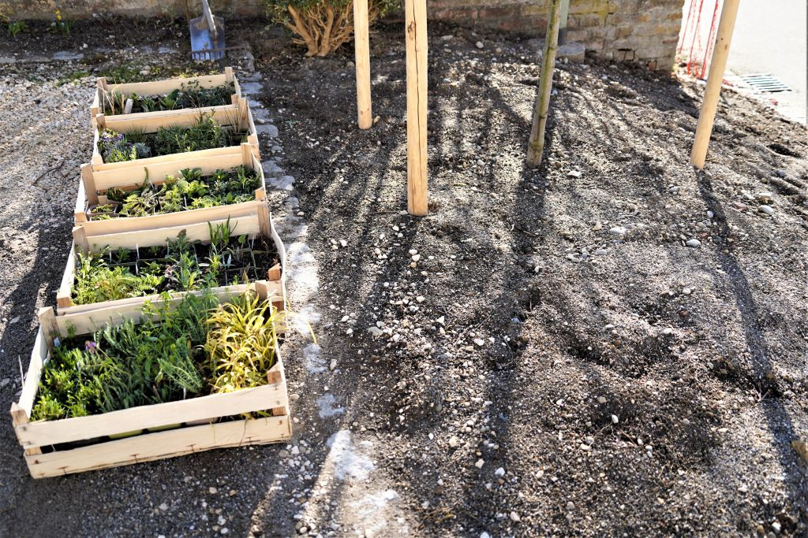

Mitgliederversammlung 2023
Totengedenken
Letzte Versammlung - 07.04.2022

... Der Verein bezweckt im Rahmen der Gartenkultur und der Landespflege die Förderung des Umweltschutzes zur Erhaltung einer schönen Kulturlandschaft und der menschlichen Gesundheit.
Der Verein unterstützt insbesondere die Ortsverschönerung und dient damit der Verschönerung der Heimat, der Heimatpflege und somit der gesamten Landeskultur. ... (§2 Abs.1 Satzung)
Abschluss 90 Jahre - 90 Bäume

Rabatte Kirche


Pflanzen für Kindergarten
Kräuterspaziergang


Fronleichnam


Gartenspaziergang


Tag der offenen Gartentür
50 Jahre Gemeinde Roggenburg
Jubiläum Veteranenverein
Staudenrabatte bei der Kirche Schleebuch
Preisverleihung "Vielfaltsmeisterschaft"
Lehrfahrt des Kreisverbandes
Familien – und Freizeittag

Betreuung Kreismustergarten
Streuobstwiese Schleebuch

Aktionstag "Roggenburger Vielfalt"
Weihnachtsmark in Roggenburg
Jahresprogramm Kreisverband
Blühwiesenprojekt 2023
Naturgartenzertifizierung
Streuobstpakt Bayern

Erhaltungsgarten Biberach

Obst umsonst - gelbes Band
Kappung
Gekappte Bäume werden zur Gefahr!!
Pilze, Fäule
Instabile Krone, Ständer
Enorme Folgekosten
Extrem Häßlich
Kappungen sind baumzerstörend
ZTV Baumpflege § 0.2.3.1